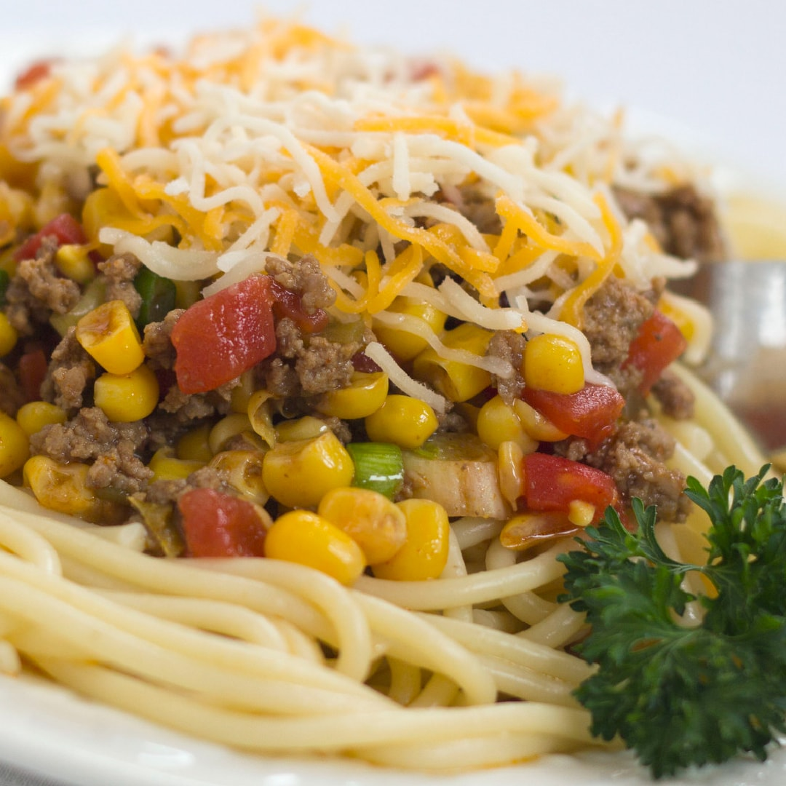

MEXICAN
SPAGHETTI

20
minutes
60
minutes
Ingredients
- Uncooked noodles
- 2 small onions
- 1 green bell pepper
- 2 lbs ground beef
- 3 cloves peeled, minced garlic
- 1 cup water
- 28 oz can crushed tomatoes
- 1 rounded tsp cumin
- 1 rounded tsp oregano
- 1 rounded tsp marjoram
- 1 flat tsp salt
- 1/8 tsp pepper
- 2 tbls chili pepper
- 4 tbls parsley
- 1 can drained, red kidney beans
- 10 oz frozen corn
- 1 can of sliced black olives
- Sour cream
- Shredded cheddar cheese
- Chilli cheese fritos
Instructions
- Fill up a large pot with water and add and pinch of salt.
- Once the water is boiling, add the noodles and stir often.
- In a separate pan, sauté onions, pepper and ground beef.
- When the meat is almost brown, throw in garlic.
- Next, drain the meat.
- Mix water and crushed tomatoes into a second large pot.
- Add the meat mixture to this large pot and stir.
- Add spices to the meat sauce and let simmer.
- Add kidney beans, corn, and sliced black olives to the sauce.
- Drain the noodles and top with the meat sauce.
- Finally, put sour cream, shredded cheese and fritos on top.